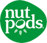
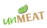
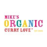
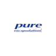
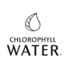
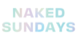
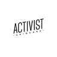

the soft bunny xx
Plant-based food, made beautiful.
Orange County ↔ Sài Gòn
22K+ on Instagram20 brands featured100% plant-based
brands I’ve worked with

nutpods- urth box

unmeat- kinnikinnick foods

mike’s organic foods- cole & mason
- joi plant milk
- the rogue panda
- cosmic bliss
- plant therapy

pure encapsulations- mixsoon
- calgee

chlorophyll water
naked sundays- physician’s choice

activist skincare- better alt
- simple modern
- mary ruth’s
Past partnerships and gifted collaborations. Listing a brand doesn’t mean we’re working together now.
selected brand work
the soft bunny standard
- 100% plant-based. Every product, every plate.
- Always disclosed. Partnerships are labeled, every time.
- Only things I’d use myself, so the recommendation means something.
- No diet culture, detox, or weight-loss products.
Language selection translates these link descriptions. The full website is in English.